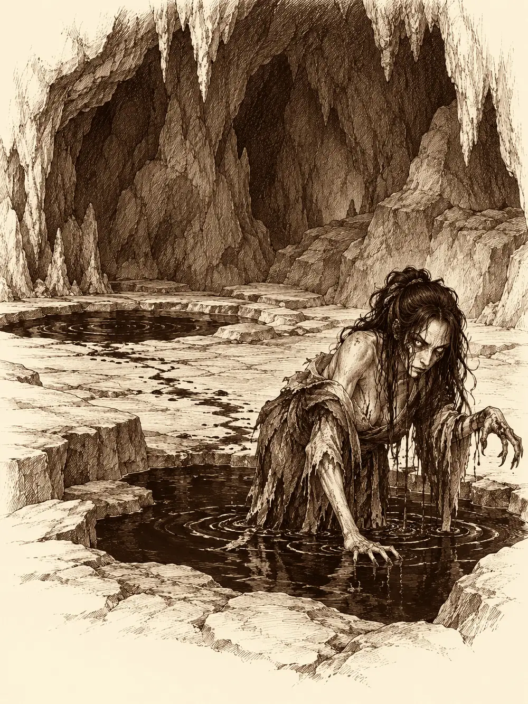

Capítulo 62
Bruja de sangre
Libro IV · Los guardianes del Oeste y del Este
Era medianoche y hacía frío. Anko se había ido a dormir hacía rato y les había dejado la llave de la taberna, que para ella era casi una muestra de cariño. En una mesa del fondo dos vecinos roncaban con la cara pegada a la madera, abrazados a sus jarras. En la otra, junto a las brasas, cinco cazadores y un yokai rojo apuraban la noche.
Gur había llegado aquella misma tarde. Venía de semanas de entrenamiento con Kuma, que ahora iba sentado en su hombro, asintiendo con la cabeza cada vez que su discípulo hablaba. El pequeño le estaba enseñando a hacerse grande y fuerte como él, el único que lo había vencido hasta entonces. En sus ratos libres había cortado leña para reparar casas, porque quería que la gente le tuviera menos miedo, y ya cortaba los troncos tan limpios que no dejaba ni una astilla.
"Oye, tú, orejas picudas. ¿Qué eres? ¿Un orco raro?".
Ermitaño le explicó con paciencia que su gente era una mezcla antigua de hadas y gigantes, y que no tenía lo que ellos llamarían un nombre propio. Gur decidió llamarlo Fol. Shigeru se presentó también: venía de Miyamoto, una aldea que necesitaba dinero y materiales para reconstruirse, y le había costado hacerse un hueco en Hakara. Esperaba algún encargo.
Entre todos se pusieron al día. Unos compañeros habían subido a las montañas a buscar el templo y habían encontrado una aldea de aarakocra invadida por pájaros negros. Eran aarakocra también, infectados por un líquido negro: la sangre de Otakemaru. Habían salvado a uno, el hermano de Hayate. Pero Hayate y Erk habían salido heridos, y la sangre se les había metido dentro. Habían tenido que marchar a la capital con el hermano, en busca de Sirth, el único que había conseguido curar a alguien de aquel mal. Shiru había perdido un cuerno y andaba mirando a todos lados. Los cazadores más curtidos del norte estaban fuera de combate. El peso caía ahora sobre ellos.
Gur, mientras tanto, se había levantado sin hacer ruido y se acercaba a la mesa de los borrachos. Volvió con treinta y cinco monedas de oro y se las puso a Ermitaño en la mano.
"Para tu profesión. Ya se lo devolverás cuando bajes".
El clérigo se las guardó sin discutir, con la idea de devolverlas a sus dueños antes de marcharse.
La puerta se abrió de golpe.
Entró un hombre tambaleándose, chillando, empapado en sangre. Le faltaba una mano. Tenía la cara cruzada por zarpazos de cuatro dedos, profundos, y se derrumbó en el suelo antes de llegar a la barra. Los borrachos se despertaron de un respingo. Shigeru fue el primero en llegar hasta él y lo sostuvo en los brazos. Alguien salió a la calle: solo había un reguero de sangre que se perdía en la oscuridad. Nadie más.
Ermitaño se arrodilló junto al herido. Los cortes eran graves. Pero había algo más: en un costado del pecho, bajo la ropa rasgada, tenía una costura, como si alguien le hubiera abierto la carne y la hubiera vuelto a cerrar, y debajo de la costura algo se movía.
"Apartaos".
Intentó curarlo de todos modos. Las heridas empezaron a cerrarse. El pecho, en cambio, empezó a bombear, cada vez más rápido, cada vez más hinchado, y de pronto estalló. Una nube de humo salió de dentro del hombre y se extendió por la sala.
El aldeano murió con el pecho abierto. Ermitaño empezó a toser. Uno de los vecinos que había estado durmiendo también.
Kuma olfateó el aire desde el hombro de Gur y arrugó la nariz.
"Esto huele a brujas".
"¿Brujas?".
"Brujas. Las de los cuentos. Las que hacen cosas malas".
Gur preguntó si las brujas eran como los brujos. El pequeño le dio una colleja.
Ermitaño se curó a sí mismo con una magia de restauración. La tos no se fue. Aka sacó un pergamino, se concentró como si fuera a ejecutar una técnica secreta y una de sus marcas se encendió en rojo bajo la ropa. Miró a los dos enfermos y vio a su alrededor un resplandor, una silueta luminosa. Era una enfermedad, una muy peligrosa, impuesta mediante algún tipo de ritual. Y vio algo más. No se contagiaba mientras el enfermo estuviera vivo. Solo cuando el cuerpo reventaba, el humo llevaba el mal a quienes estaban cerca.
"Intenta no morirte", le dijo a Ermitaño.
Cerraron la taberna con el vecino enfermo dentro, para protegerlo y para que nadie se acercara a él. Taparon el cadáver y dejaron un aviso. Ermitaño podía acompañarlos. Gur fue a buscar a Maroxi, que sabía de pociones, y no lo encontró por ninguna parte. Siguieron el rastro de sangre.
El rastro los llevó fuera del pueblo, por un camino, hasta un claro donde había tres cuerpos tendidos en el suelo. Tenían el pecho abierto del mismo modo. Hacía una hora, quizá más, que alguien los había dejado allí. Gur les registró los bolsillos; si estaban muertos, razonó, no iban a necesitar el dinero, y el Fol tenía que pagarse la profesión. Sacó doce monedas.
Entonces sonó una campanilla.
Detrás de un tocón había un ser diminuto, poco más alto que una mano, con una ramita en la mano y una campana atada en la punta. Los miraba. Ladeaba la cabeza y la campanilla tintineaba. Le hablaron en varias lenguas y no contestó. Katari probó a meterse en su mente. Uno de ellos se agachó a su altura y le tendió la mano; el ser lo miró, se le acercó, lo señaló con un dedo, y en su cara se dibujó una sonrisa. Luego se dio la vuelta y echó a andar, despacio, tocando la campanilla.
Quería que lo siguieran.
Katari consultó a los espíritus que siempre la acompañaban. Le contaron que aquello era un kodama, uno de esos pequeños espíritus que viven en los árboles viejos y protegen el bosque y a sus animales. Pero también la advirtieron: había algo raro en su esencia. No era un espíritu normal.
Lo siguieron igualmente, con las armas a mano. Shigeru desenvainó la espada. Kuma le prometió a su discípulo que, si iba a morir, le avisaría con un poco de tiempo.

El rastro de sangre seguía al pequeño. Se metieron en un bosquecillo junto a las montañas, cada vez más oscuro, hasta llegar a la boca de una cueva. El pequeño entró, se giró en el umbral, los miró moviendo la cabeza de un modo que no le gustó a nadie y desapareció dentro.
Ermitaño extendió las manos para sentir la magia de la cueva. Le golpeó una oleada de magia de muerte, fría, que le erizó todos los pelos del cuerpo.
"Llevad mucho cuidado".
Dentro, la cueva era enorme, con varios pisos de altura unidos por escaleras talladas en la roca y un pozo profundo en un costado. Había esqueletos y cuerpos por todas partes. Sobre un fuego, una olla hervía soltando un humo verdoso. En lo alto, en una especie de balcón de piedra, se veían frascos, alambiques y una mesa llena de cacharros de alquimista.
De las setas que crecían en las paredes empezaron a salir más kodama como aquel. Dos, cuatro, diez, en los salientes, sobre las rocas, cada uno con su campanilla, tocándolas todas a la vez.
Aka, que veía lo invisible desde que había entrado, distinguió en lo alto una figura humanoide pero deforme que se movía y se escondía detrás de una roca. No era pequeña.
Una voz llenó la cueva.
"Así que habéis venido a acabar conmigo. No podréis. Usaré vuestros cuerpos igual que los de los aldeanos. Otakemaru ha vuelto".
Los espíritus sonreían. No era una sonrisa amable. Al mirarlos de cerca se veía que tenían otra boca, y que la sonrisa era casi macabra.
La primera flecha alcanzó a uno de ellos, y el pequeño espíritu empezó a hincharse y reventó. La explosión de energía de muerte alcanzó a todos los que estaban a su alrededor.
Así eran. Arañaban, chillaban con un ruido que distorsionaba los sentidos y hacía fallar los golpes, y cuando morían estallaban. Gur se metió en medio y los barría de dos en dos con el hacha, y cada barrido le estallaba en la cara. Aguantaba. Algunos, cuando se acercaban lo suficiente, se apuñalaban a sí mismos para reventar junto a sus enemigos. Aka siguió disparando desde atrás. Shigeru combinaba la espada con los puños y aprendió pronto a apartarse antes de que estallaran. Katari levantó un tótem espiritual con forma de unicornio que hacía más fuertes las curas, y Ermitaño iba de uno a otro cerrando heridas.
La bruja no bajó hasta que muchos de los pequeños estuvieron muertos.
Apareció en un charco de sangre y se hundió en él, y salió de otro charco al otro lado de la cueva, sin pisar las escaleras. Era una mujer deforme, de ojos amarillos. Quien la hería sentía su propio golpe en la carne y un terror helado subiéndole por la espalda. Gritaba, y su grito dejaba a los que lo oían sin poder moverse. Aka tuvo que retroceder y volver a buscar distancia para disparar. Shigeru se quedó paralizado un momento y luego volvió a la carga con más rabia. Gur aguantó su mirada sin pestañear y la persiguió por toda la cueva.
Ermitaño cayó también bajo uno de los gritos, pero mantuvo a su alrededor los espíritus guardianes que quemaban a los enemigos que se acercaban, y llamó a un arma espiritual que golpeaba sola. Katari curaba, protegía y, cuando la bruja trepó a lo alto, invocó osos que la obligaron a defenderse también de cerca. Uno de los osos escaló hasta su saliente. Gur utilizó a otro como escalón, saltó y le descargó las dos hachas.
La bruja estaba al límite. Katari le lanzó fuego desde abajo. Y el oso que había trepado le dio el último mordisco.
La mujer se deshizo en un líquido espeso, negro como la sangre podrida, que burbujeó en el suelo. Sus ojos amarillos quedaron flotando un momento sobre el charco.
"Otakemaru vendrá a por vosotros".
Luego se hundieron.
La tos de Ermitaño fue cediendo poco a poco. Al final tosió una vez más, fuerte, como si arrancara algo de dentro, y al mirarse la mano la vio manchada de sangre. Se encontraba mejor. Volvió a tantear la magia de la cueva y notó que aquella magia de muerte se iba retirando, más débil a cada momento, hasta desaparecer. Faltaba saber cómo estaba el vecino que habían dejado encerrado en la taberna.
Gur se acercó a la olla. Olía a estofado. Metió un cazo y lo sacó lleno: una mano, un ojo y unos dedos flotaban en el caldo.
"Qué rico", dijo Kuma.
Gur lo probó. No le sentó mal. Le pasó una pierna a su maestro, que se la comió con muchas ganas. Luego subió a la mesa de la bruja y, aunque no sabía nada de pociones, cogió cinco plantas que le recordaban a las que llevaba Maroxi, por si a él le servían.
Shigeru encontró una poción entre los frascos. En la etiqueta ponía poción de crecimiento. Gur la quería. El monje se la ofreció con una condición.
"Quiero luchar contigo. Si tú eres el campeón, tengo que luchar contra los mejores".
"Vale. Ahora".
Kuma le advirtió que primero curara a la gente, pero Gur ya había entrado en furia. El primer golpe del hacha derribó a Shigeru. Ni siquiera había llegado a atacar. Uno de los osos de Katari lo recogió con el hocico y se lo llevó hacia la salida colgando de la boca, inconsciente pero vivo. La poción seguía en la bolsa de Shigeru; Gur había dicho que primero se pegaban y luego hablaban de pociones.
Ermitaño se quedó un rato más investigando la cueva. Encontró notas, recetas, listas de ingredientes y preparaciones escritas en silvano, una lengua que no sabía leer. Se las llevó. Después de descansar podría pedirle a su dios que le permitiera entenderlas. Lo que sí sabía era que aquel mal no tenía nada que ver con la sangre negra que había infectado a los aarakocra. Era otra cosa.
Salieron de la cueva, unos más heridos que otros, y emprendieron el camino de vuelta a Hakara. Ninguno miró hacia atrás. Detrás de ellos, sobre las montañas, una nube negra empezaba a extenderse por el cielo del norte.